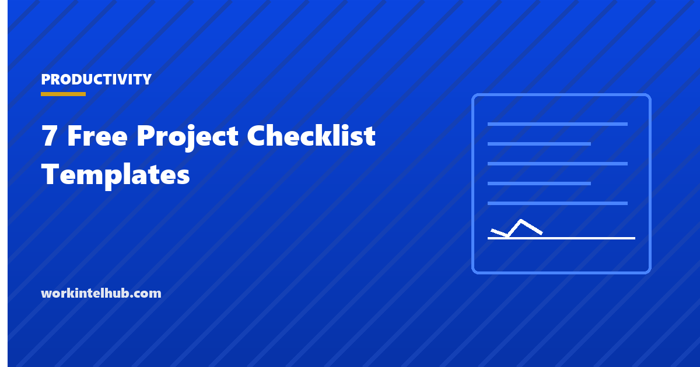

7 Free Project Checklist Templates

A checklist is the cheapest control in project management. It does not plan, estimate or schedule; it stops the thing everyone knew about from being forgotten under pressure, which is how most avoidable project failures happen. The surgical and aviation evidence is well known; the project version is the kickoff that skipped stakeholder identification, the go-live without a rollback plan, the closeout that never captured lessons.
Seven checklists are here, one for each point in a project where things get skipped: kickoff, planning, the weekly cycle, deliverable review, risk review, closeout and go-live. The Excel version tracks each item with an owner, a date and a status, and counts completion.
Download the templates
Free files: Word, Excel and PDF
Three files, free, no email required. Word to edit, Excel to track, PDF to print or share.
Templates open in Microsoft Word, Excel, Google Docs and Sheets, LibreOffice and any PDF reader. Free to use and adapt for your organisation.
The seven checklists
| Checklist | When | Items |
|---|---|---|
| Project kickoff checklist | Before work starts | 9 |
| Project planning checklist | Before the baseline is approved | 8 |
| Weekly project checklist | Every week | 7 |
| Deliverable review checklist | Before each deliverable is accepted | 7 |
| Risk review checklist | At each risk review, typically fortnightly | 6 |
| Project closeout checklist | After the last deliverable | 8 |
| Go-live checklist | Before any launch, release or cutover | 8 |
Why checklists work when plans do not
A plan describes what should happen; a checklist confirms that the critical steps did. The items are deliberately obvious. Nobody forgets to identify stakeholders because they do not know it matters; they forget because the kickoff meeting ran long and the next thing was urgent. A checklist with an owner and a date turns a known step into a tracked commitment, and the status column makes the gap visible before it costs anything.
Keep them short. A checklist of forty items is a procedure nobody reads; eight to ten items that would each hurt if missed is the right length. The seven here average eight.
Using them in a real project
- Run the kickoff and planning checklists once; attach them to the charter and the baseline.
- Run the weekly checklist in the project meeting and let the status report come out of it.
- Run the deliverable review for every deliverable, however small; acceptance in writing is what closes a project.
- Run go-live as a meeting with a recorded go or no-go decision.
- Run closeout even when the project ended badly; the lessons are worth more then.
- Add items from your own post-mortems; a checklist that grows from real failures is the most valuable document a project office owns.
Key takeaways
- Checklists stop known steps being skipped under pressure, which is how most avoidable project failures happen.
- Seven checklists cover the points where things get missed: kickoff, planning, weekly, deliverable review, risk review, closeout, go-live.
- Eight to ten items per list, each with an owner, a date and a status.
- Grow the lists from your own post-mortems.
Frequently asked questions
What should a project checklist include?
The steps that would hurt if missed at that point in the project, each with an owner, a due date and a status. A kickoff checklist covers sponsor, objectives, scope, budget, team, stakeholders, risks and tools; a go-live checklist covers testing, rollback, support, training, data, monitoring and the go or no-go decision.
How many items should a checklist have?
Eight to twelve. Longer lists become procedures that are skimmed rather than used. If a stage needs more, split it into two checklists.
What is the difference between a checklist and a project plan?
A plan sets out what will be done, by whom and when. A checklist confirms that specific critical steps have been done before moving on. Plans are built once and updated; checklists are run at defined points.
Who owns the project checklist?
The project manager owns the lists; each item has its own owner. The status is reviewed in the project meeting, and the completed list is filed with the stage's documents as evidence.
Can I use these checklists for agile projects?
Yes, with adjustments: the planning checklist becomes a sprint planning checklist, the deliverable review becomes the definition of done, and go-live runs at each release. The agile project management templates on this site include the sprint versions.